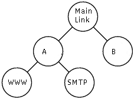
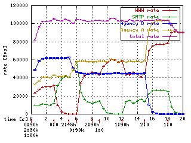

- Örnek 3.1. Sorunumuz:
- Önceki bölümdeki sorun bu resimdeki sınıf hiyerarşisine göre çözümlenecek. Müşteri A, şimdi doğrudan kendi sınıfı ile temsil edilecektir.
Tekrar, HTB, her uç sınıfa, o sınıfa atanmış olan miktarı, talep olduğunda, asgari miktar olarak garanti eder. Bu başka HTB sınıflarının atası olmayan HTB sınıflarına uygulanır. Bunlara uç sınıflar diyoruz. Başka HTB sınıflarının atası olan HTB sınıflarına ise iç sınıflar diyoruz ve bunlara HTB, her iç sınıfa, o sınıfın çocuklarına atanmış olan toplam miktarı, talep olduğunda, asgari miktar olarak garanti eder kuralını uyguluyoruz. Bu durumda, 40kbps'i A'ya atarsak, eğer A WWW için ayrılan hızdan azını isterse, artan miktar toplamda 40kbps'i sağlayacak şekilde A'nın başka bir trafiğine (eğer istek varsa) kullanılacaktır.
Not Paket sınıflandırma kuralları iç düğümlere de atanabilir. Bunun için iç düğümü başka bir filtre listesi ile ilişkilendirmelisiniz. Sonuçta, ya bir uç sınıf ya da özel bir 1:0 sınıfı elde edilmesi gerekir. Bir ata sınıf için sağlanan hız onun çocuklarının hızlarının toplamı olmalıdır.Yeni komutlarımız şöyle olacaktır:tc class add dev eth0 parent 1: classid 1:1 htb rate 100kbps ceil 100kbps tc class add dev eth0 parent 1:1 classid 1:2 htb rate 40kbps ceil 100kbps tc class add dev eth0 parent 1:2 classid 1:10 htb rate 30kbps ceil 100kbps tc class add dev eth0 parent 1:2 classid 1:11 htb rate 10kbps ceil 100kbps tc class add dev eth0 parent 1:1 classid 1:12 htb rate 60kbps ceil 100kbps

Şimdi, hiyerarşik çözümün sonucunu gösteren çizgeye bakalım. A'nın WWW trafiği durduğunda, ona atanan band genişliği A'nın diğer trafiğine tahsis edilir, böylece A'nın toplam band genişliği hala 40kbps olarak kalır. Eğer A toplamda 40kbps'den azını talep ederse artan miktar B'ye tahsis edilir.